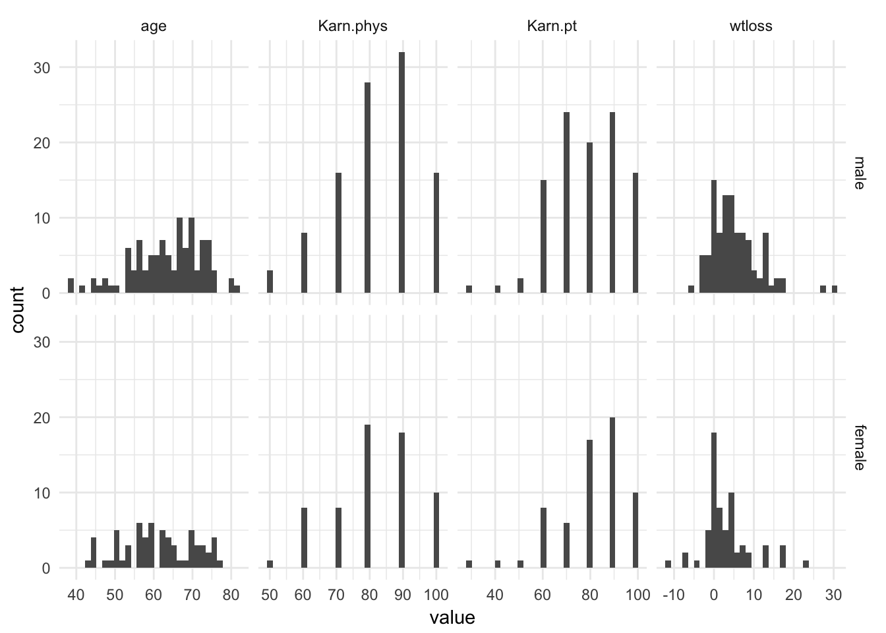
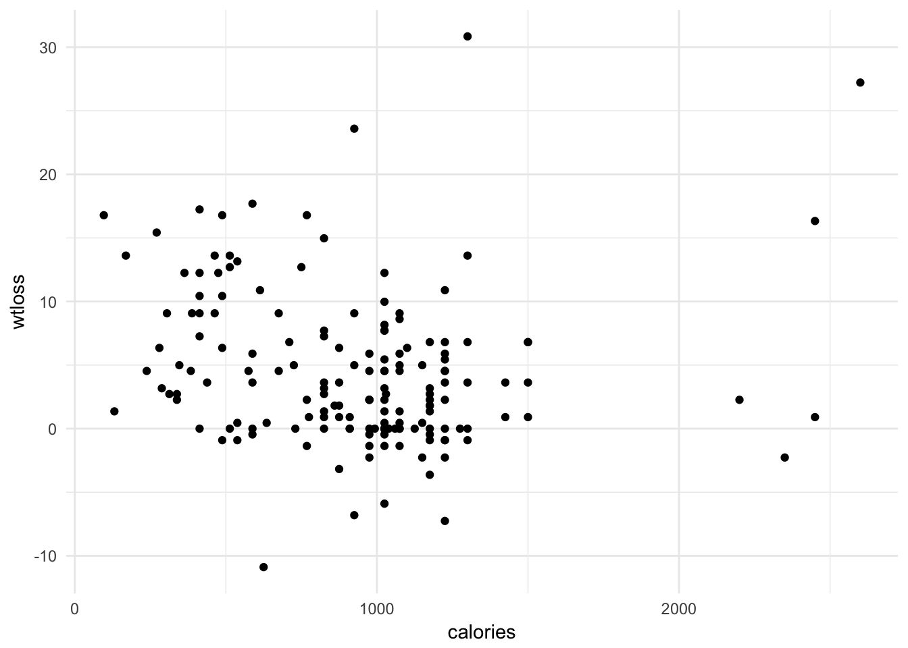
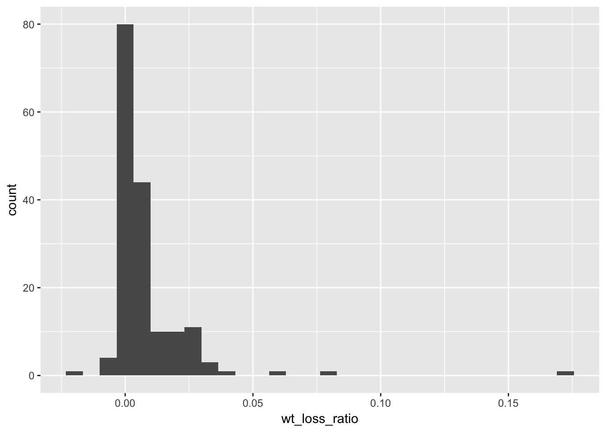
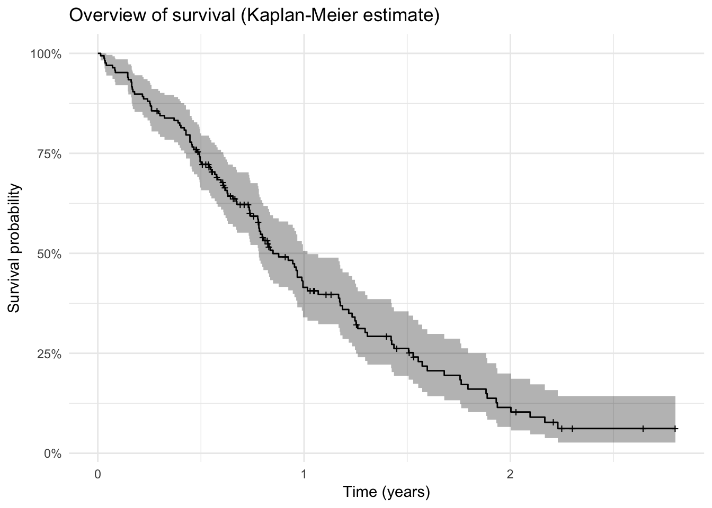
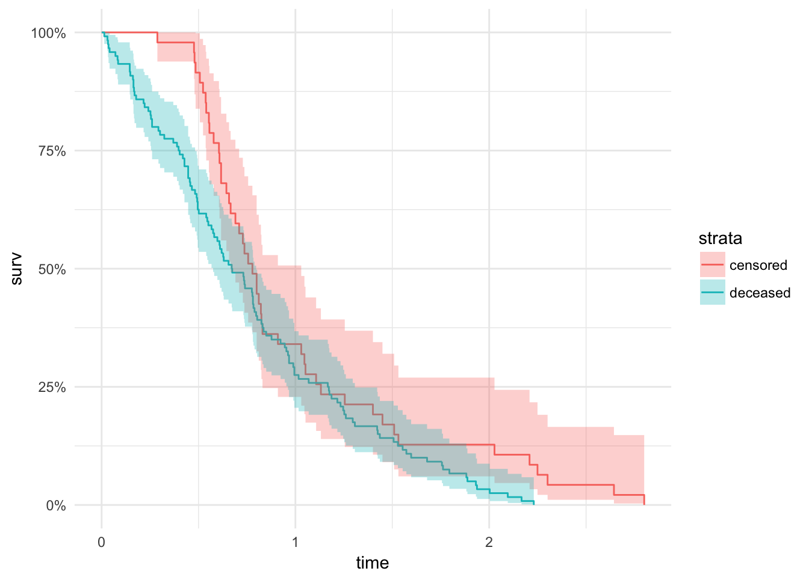
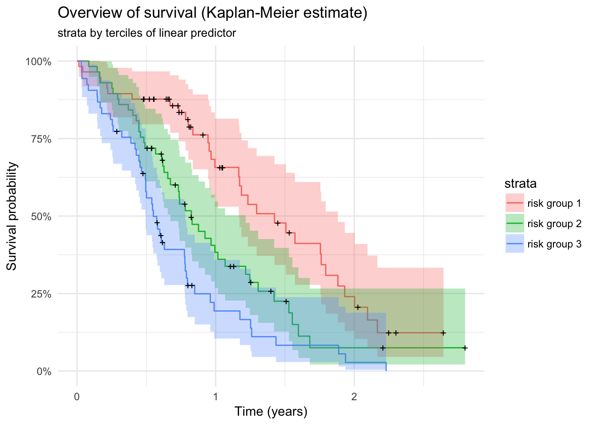
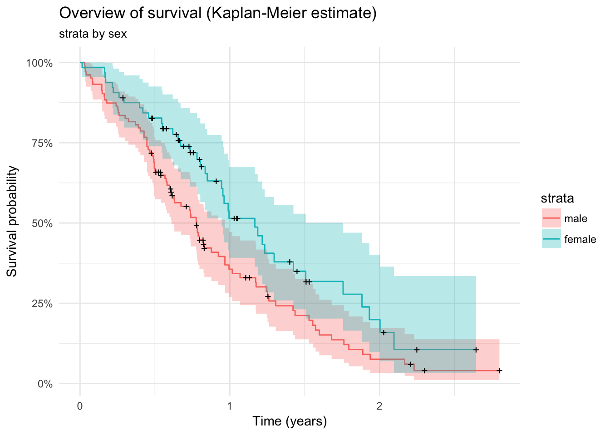
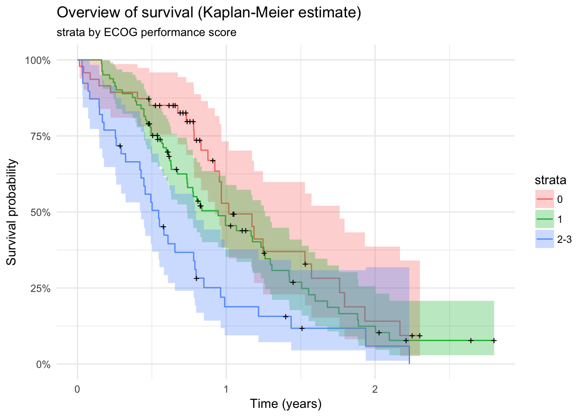
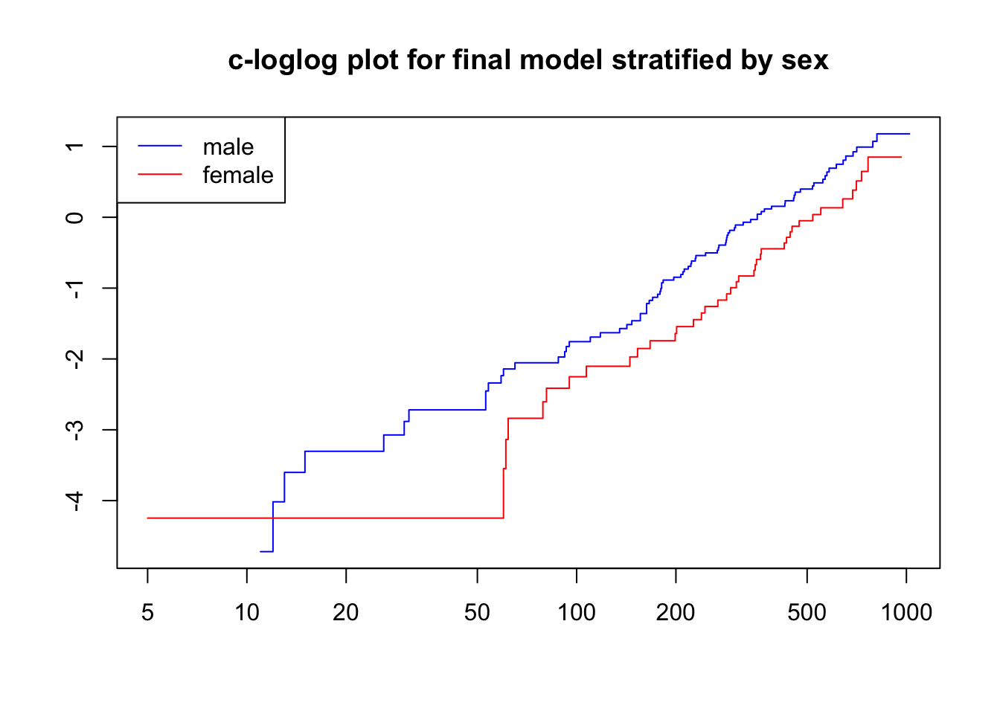
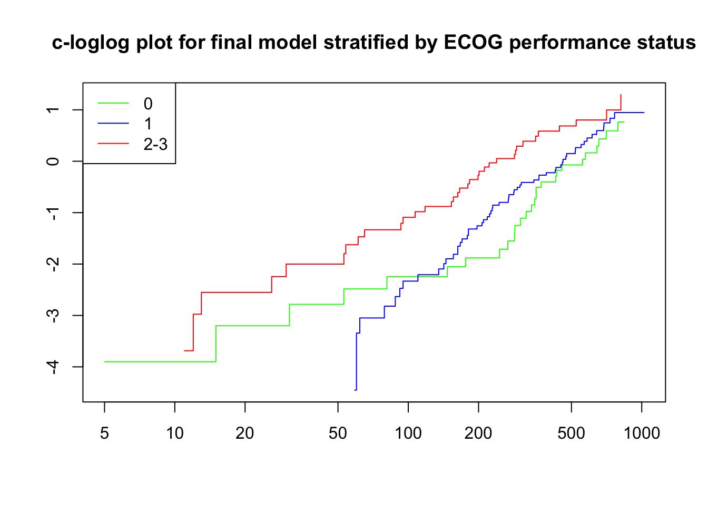

Last updated: 2018-04-20
Code version: e96adb1
library(dplyr)
library(data.table)
library(magrittr)
library(purrr)
library(here) # for tracking working directory
library(ggplot2)
library(epistats)
library(broom)
library(survival)lc <- read.csv(here("data", "lungca.csv"))
cont_vars <- c("age", "Karn.phys", "Karn.pt", "wtloss")
lc %<>%
mutate(status = status - 1,
sex = factor(sex, levels = c("1", "2"), labels = c("male", "female")),
wtloss = 0.453592 * wtloss,
ECOG.phys = factor(ifelse(ECOG.phys == "3", "2", ECOG.phys)),
ECOG.phys = factor(ECOG.phys, levels = c("0", "1", "2"),
labels = c("0", "1", "2-3")))
# age = age - mean(age))
str(lc)'data.frame': 167 obs. of 10 variables:
$ center : int 3 5 12 7 11 1 7 6 12 22 ...
$ time : int 455 210 1022 310 361 218 166 170 567 613 ...
$ status : num 1 1 0 1 1 1 1 1 1 1 ...
$ age : int 68 57 74 68 71 53 61 57 57 70 ...
$ sex : Factor w/ 2 levels "male","female": 1 1 1 2 2 1 1 1 1 1 ...
$ ECOG.phys: Factor w/ 3 levels "0","1","2-3": 1 2 2 3 3 2 3 2 2 2 ...
$ Karn.phys: int 90 90 50 70 60 70 70 80 80 90 ...
$ Karn.pt : int 90 60 80 60 80 80 70 80 70 100 ...
$ calories : int 1225 1150 513 384 538 825 271 1025 2600 1150 ...
$ wtloss : num 6.804 4.99 0 4.536 0.454 ...summary(lc) center time status age
Min. : 1.00 Min. : 5.0 Min. :0.0000 Min. :39.00
1st Qu.: 3.00 1st Qu.: 174.5 1st Qu.:0.0000 1st Qu.:57.00
Median :11.00 Median : 268.0 Median :1.0000 Median :64.00
Mean :10.71 Mean : 309.9 Mean :0.7186 Mean :62.57
3rd Qu.:15.00 3rd Qu.: 419.5 3rd Qu.:1.0000 3rd Qu.:70.00
Max. :32.00 Max. :1022.0 Max. :1.0000 Max. :82.00
sex ECOG.phys Karn.phys Karn.pt calories
male :103 0 :47 Min. : 50.00 Min. : 30.00 Min. : 96.0
female: 64 1 :81 1st Qu.: 70.00 1st Qu.: 70.00 1st Qu.: 619.0
2-3:39 Median : 80.00 Median : 80.00 Median : 975.0
Mean : 82.04 Mean : 79.58 Mean : 929.1
3rd Qu.: 90.00 3rd Qu.: 90.00 3rd Qu.:1162.5
Max. :100.00 Max. :100.00 Max. :2600.0
wtloss
Min. :-10.886
1st Qu.: 0.000
Median : 3.175
Mean : 4.408
3rd Qu.: 6.804
Max. : 30.844 nna(lc) center time status age sex ECOG.phys Karn.phys
0 0 0 0 0 0 0
Karn.pt calories wtloss
0 0 0 table(lc$ECOG.phys, lc$sex)
male female
0 28 19
1 52 29
2-3 23 16lc %>%
data.table::melt(measure.vars = cont_vars) %>%
ggplot(aes(x = value)) +
geom_histogram() +
facet_grid(sex~variable, scales = "free_x") +
theme_minimal()
Recode Karnophsky as factors
factor_vars <- c("center", "sex", "ECOG.phys", "Karn.phys", "Karn.pt")
lc %<>%
mutate_at(vars(factor_vars), funs(as.factor))lc %>%
ggplot(aes(x = calories, y = wtloss)) +
geom_point() + theme_minimal()
lc %>%
mutate(
wt_loss_ratio = wtloss / calories
) %>%
ggplot(aes(x = wt_loss_ratio)) +
geom_histogram()
require(ggfortify)
surv_plot <- lc %>%
survfit(Surv(time / 365, status) ~ 1, data = .) %>%
autoplot() + theme_minimal() +
labs(x = "Time (years)",
y = "Survival probability") +
ggtitle("Overview of survival (Kaplan-Meier estimate)")
surv_plot
survfit1 <- survfit(Surv(time, status) ~ 1, data = lc)
print(survfit1)Call: survfit(formula = Surv(time, status) ~ 1, data = lc)
n events median 0.95LCL 0.95UCL
167 120 310 285 371 require(ggfortify)
lc %>%
mutate(dummy_variable = T,
status = factor(status, levels = c(0, 1), labels = c("censored", "deceased"))) %>%
survfit(Surv(time / 365, dummy_variable) ~ status, data = .) %>%
autoplot() + theme_minimal()
lc %>%
coxph(Surv(time, status) ~ age + sex + ECOG.phys + Karn.phys + Karn.pt + calories + wtloss,
data = .) %>%
summary()Call:
coxph(formula = Surv(time, status) ~ age + sex + ECOG.phys +
Karn.phys + Karn.pt + calories + wtloss, data = .)
n= 167, number of events= 120
coef exp(coef) se(coef) z Pr(>|z|)
age 6.272e-03 1.006e+00 1.205e-02 0.520 0.60286
sexfemale -6.211e-01 5.373e-01 2.146e-01 -2.894 0.00381 **
ECOG.phys1 6.387e-01 1.894e+00 3.527e-01 1.811 0.07018 .
ECOG.phys2-3 1.357e+00 3.885e+00 5.451e-01 2.490 0.01278 *
Karn.phys60 1.101e+00 3.007e+00 6.825e-01 1.613 0.10670
Karn.phys70 1.025e+00 2.787e+00 6.556e-01 1.564 0.11792
Karn.phys80 1.200e+00 3.321e+00 6.681e-01 1.796 0.07244 .
Karn.phys90 1.341e+00 3.822e+00 6.859e-01 1.955 0.05058 .
Karn.phys100 1.484e+00 4.411e+00 7.743e-01 1.917 0.05528 .
Karn.pt40 -3.821e-01 6.824e-01 1.521e+00 -0.251 0.80158
Karn.pt50 7.358e-01 2.087e+00 1.216e+00 0.605 0.54524
Karn.pt60 1.340e-01 1.143e+00 1.042e+00 0.129 0.89773
Karn.pt70 -1.180e-01 8.887e-01 1.078e+00 -0.109 0.91283
Karn.pt80 -2.206e-01 8.020e-01 1.086e+00 -0.203 0.83906
Karn.pt90 -1.580e-02 9.843e-01 1.082e+00 -0.015 0.98835
Karn.pt100 -5.112e-01 5.998e-01 1.105e+00 -0.463 0.64366
calories -5.387e-05 9.999e-01 2.839e-04 -0.190 0.84952
wtloss -3.021e-02 9.702e-01 1.831e-02 -1.650 0.09903 .
---
Signif. codes: 0 '***' 0.001 '**' 0.01 '*' 0.05 '.' 0.1 ' ' 1
exp(coef) exp(-coef) lower .95 upper .95
age 1.0063 0.9937 0.98280 1.0303
sexfemale 0.5373 1.8610 0.35281 0.8184
ECOG.phys1 1.8940 0.5280 0.94873 3.7810
ECOG.phys2-3 3.8849 0.2574 1.33485 11.3067
Karn.phys60 3.0072 0.3325 0.78925 11.4580
Karn.phys70 2.7874 0.3588 0.77114 10.0752
Karn.phys80 3.3208 0.3011 0.89644 12.3015
Karn.phys90 3.8222 0.2616 0.99660 14.6594
Karn.phys100 4.4111 0.2267 0.96701 20.1219
Karn.pt40 0.6824 1.4654 0.03465 13.4403
Karn.pt50 2.0871 0.4791 0.19241 22.6384
Karn.pt60 1.1434 0.8746 0.14819 8.8218
Karn.pt70 0.8887 1.1252 0.10745 7.3502
Karn.pt80 0.8020 1.2468 0.09543 6.7411
Karn.pt90 0.9843 1.0159 0.11805 8.2077
Karn.pt100 0.5998 1.6673 0.06877 5.2312
calories 0.9999 1.0001 0.99939 1.0005
wtloss 0.9702 1.0307 0.93603 1.0057
Concordance= 0.662 (se = 0.031 )
Rsquare= 0.182 (max possible= 0.998 )
Likelihood ratio test= 33.53 on 18 df, p=0.01437
Wald test = 33.29 on 18 df, p=0.01539
Score (logrank) test = 35.97 on 18 df, p=0.007125Model with random intercept per center
Random slopes make no sense -> why different effect of age in different centers?
fit1 <- coxph(Surv(time, status) ~ age + sex + ECOG.phys + Karn.phys + Karn.pt + calories * wtloss + frailty(center, dist = "gauss"),
data = lc)
# summary(fit)
fit2 <- coxph(Surv(time, status) ~ age + sex + ECOG.phys + Karn.phys + Karn.pt + calories * wtloss,
data = lc)
fits <- list(with_random_full = fit1, no_random_full = fit2)
map_df(fits, extractAIC)# A tibble: 2 x 2
with_random_full no_random_full
<dbl> <dbl>
1 23.9 19.0
2 1014 1021 extractAIC(fit1)[1] 23.91509 1014.17005extractAIC(fit2)[1] 19.000 1020.647anova(fit1, fit2, test = "Chisq")Analysis of Deviance Table
Cox model: response is Surv(time, status)
Model 1: ~ age + sex + ECOG.phys + Karn.phys + Karn.pt + calories * wtloss + frailty(center, dist = "gauss")
Model 2: ~ age + sex + ECOG.phys + Karn.phys + Karn.pt + calories * wtloss
loglik Chisq Df P(>|Chi|)
1 -483.17
2 -491.32 16.307 4.9151 0.00564 **
---
Signif. codes: 0 '***' 0.001 '**' 0.01 '*' 0.05 '.' 0.1 ' ' 1With manual likelihood-ratio test for chi-square distribution with 1 degree of freedom
pchisq(2*(logLik(fit1) - logLik(fit2)), df = 1, lower.tail = F)'log Lik.' 5.38541e-05 (df=0.9761468)Follow LRT the model with random intercept per center is better.
Use this random part, now reduce fixed part.
fit_full <- coxph(Surv(time, status) ~ age + sex + ECOG.phys + Karn.phys + Karn.pt + calories * wtloss + frailty(center, dist = "gauss"), data = lc)fit <- fit_full
drop1(fit, test = "Chisq")Single term deletions
Model:
Surv(time, status) ~ age + sex + ECOG.phys + Karn.phys + Karn.pt +
calories * wtloss + frailty(center, dist = "gauss")
Df AIC LRT Pr(>Chi)
<none> 1014.2
age 0.84864 1012.4 -0.1119 1.000000
sex 2.69586 1024.0 15.2547 0.001155 **
ECOG.phys 1.32255 1016.3 4.7459 0.045981 *
Karn.phys 5.23149 1010.7 7.0146 0.241562
Karn.pt 6.35830 1004.7 3.2178 0.814319
frailty(center, dist = "gauss") 4.91509 1020.6 16.3074 0.005640 **
calories:wtloss 1.00408 1012.4 0.2284 0.634434
---
Signif. codes: 0 '***' 0.001 '**' 0.01 '*' 0.05 '.' 0.1 ' ' 1fit <- coxph(Surv(time, status) ~ sex + ECOG.phys + Karn.phys + Karn.pt + calories * wtloss + frailty(center, dist = "gauss"),
data = lc)
drop1(fit, test = "Chisq")Single term deletions
Model:
Surv(time, status) ~ sex + ECOG.phys + Karn.phys + Karn.pt +
calories * wtloss + frailty(center, dist = "gauss")
Df AIC LRT Pr(>Chi)
<none> 1012.4
sex 2.71446 1022.4 15.4992 0.001049 **
ECOG.phys 1.39257 1014.5 4.9108 0.045759 *
Karn.phys 5.34558 1008.8 7.1333 0.243242
Karn.pt 6.26163 1003.0 3.1719 0.811303
frailty(center, dist = "gauss") 5.06645 1018.9 16.6657 0.005450 **
calories:wtloss 0.97932 1010.6 0.2180 0.631965
---
Signif. codes: 0 '***' 0.001 '**' 0.01 '*' 0.05 '.' 0.1 ' ' 1fit <- coxph(Surv(time, status) ~ sex + ECOG.phys + Karn.phys + calories * wtloss + frailty(center, dist = "gauss"),
data = lc)
drop1(fit, test = "Chisq")Single term deletions
Model:
Surv(time, status) ~ sex + ECOG.phys + Karn.phys + calories *
wtloss + frailty(center, dist = "gauss")
Df AIC LRT Pr(>Chi)
<none> 1003.0
sex 2.61157 1014.6 16.7801 0.0005019 ***
ECOG.phys 2.01604 1009.2 10.2417 0.0060855 **
Karn.phys 5.64572 1001.5 9.8126 0.1125923
frailty(center, dist = "gauss") 5.80483 1009.6 18.2374 0.0049296 **
calories:wtloss 0.94795 1001.3 0.1821 0.6477098
---
Signif. codes: 0 '***' 0.001 '**' 0.01 '*' 0.05 '.' 0.1 ' ' 1fit <- coxph(Surv(time, status) ~ sex + ECOG.phys + Karn.phys + calories + wtloss + frailty(center, dist = "gauss"),
data = lc)
drop1(fit, test = "Chisq")Single term deletions
Model:
Surv(time, status) ~ sex + ECOG.phys + Karn.phys + calories +
wtloss + frailty(center, dist = "gauss")
Df AIC LRT Pr(>Chi)
<none> 1001.3
sex 2.6093 1012.9 16.7953 0.0004968 ***
ECOG.phys 2.0940 1007.5 10.4420 0.0060347 **
Karn.phys 5.7320 1000.2 10.3679 0.0966516 .
calories 1.2941 1000.1 1.3760 0.3201357
wtloss 1.5644 1004.2 6.0541 0.0303939 *
frailty(center, dist = "gauss") 5.8569 1007.8 18.1768 0.0052451 **
---
Signif. codes: 0 '***' 0.001 '**' 0.01 '*' 0.05 '.' 0.1 ' ' 1fit <- coxph(Surv(time, status) ~ sex + ECOG.phys + Karn.phys + wtloss + frailty(center, dist = "gauss"),
data = lc)
drop1(fit, test = "Chisq")Single term deletions
Model:
Surv(time, status) ~ sex + ECOG.phys + Karn.phys + wtloss + frailty(center,
dist = "gauss")
Df AIC LRT Pr(>Chi)
<none> 1000.08
sex 2.3324 1010.94 15.5180 0.0006593 ***
ECOG.phys 2.3676 1006.90 11.5541 0.0047662 **
Karn.phys 5.5511 998.46 9.4831 0.1207032
wtloss 1.7026 1003.14 6.4606 0.0288310 *
frailty(center, dist = "gauss") 5.5628 1005.89 16.9309 0.0070480 **
---
Signif. codes: 0 '***' 0.001 '**' 0.01 '*' 0.05 '.' 0.1 ' ' 1fit <- coxph(Surv(time, status) ~ sex + ECOG.phys + wtloss + frailty(center, dist = "gauss"),
data = lc)
drop1(fit, test = "Chisq")Single term deletions
Model:
Surv(time, status) ~ sex + ECOG.phys + wtloss + frailty(center,
dist = "gauss")
Df AIC LRT Pr(>Chi)
<none> 998.46
sex 1.8785 1005.85 11.1391 0.0032752 **
ECOG.phys 6.7385 1013.96 28.9683 0.0001179 ***
wtloss 1.2017 999.66 3.5979 0.0758057 .
frailty(center, dist = "gauss") 5.0117 1001.90 13.4614 0.0195731 *
---
Signif. codes: 0 '***' 0.001 '**' 0.01 '*' 0.05 '.' 0.1 ' ' 1fit <- coxph(Surv(time, status) ~ sex + ECOG.phys + frailty(center, dist = "gauss"),
data = lc)
drop1(fit, test = "Chisq")Single term deletions
Model:
Surv(time, status) ~ sex + ECOG.phys + frailty(center, dist = "gauss")
Df AIC LRT Pr(>Chi)
<none> 999.66
sex 1.5970 1005.44 8.9712 0.0068833 **
ECOG.phys 6.6708 1011.98 25.6673 0.0004465 ***
frailty(center, dist = "gauss") 4.8100 1002.65 12.6151 0.0240372 *
---
Signif. codes: 0 '***' 0.001 '**' 0.01 '*' 0.05 '.' 0.1 ' ' 1fit_final <- coxph(Surv(time, status) ~ sex + ECOG.phys + frailty(center, dist = "gauss"), data = lc)
summary(fit_final)Call:
coxph(formula = Surv(time, status) ~ sex + ECOG.phys + frailty(center,
dist = "gauss"), data = lc)
n= 167, number of events= 120
coef se(coef) se2 Chisq DF p
sexfemale -0.5269 0.1986 0.1973 7.04 1.00 8.0e-03
ECOG.phys1 0.3268 0.2391 0.2350 1.87 1.00 1.7e-01
ECOG.phys2-3 1.0598 0.2693 0.2628 15.49 1.00 8.3e-05
frailty(center, dist = "g 7.71 4.92 1.7e-01
exp(coef) exp(-coef) lower .95 upper .95
sexfemale 0.5904 1.6937 0.4001 0.8714
ECOG.phys1 1.3866 0.7212 0.8678 2.2156
ECOG.phys2-3 2.8859 0.3465 1.7023 4.8925
Iterations: 8 outer, 30 Newton-Raphson
Variance of random effect= 0.07332914
Degrees of freedom for terms= 1.0 1.9 4.9
Concordance= 0.674 (se = 0.031 )
Likelihood ratio test= 32.19 on 7.81 df, p=7.379e-05knitr::kable(extract_RR(fit_final))| estimate | ci_low | ci_high | |
|---|---|---|---|
| sexfemale | 0.5904203 | 0.2011851 | 0.9796554 |
| ECOG.phys1 | 1.3865878 | 0.9179148 | 1.8552608 |
| ECOG.phys2-3 | 2.8858958 | 2.3580244 | 3.4137673 |
cox.zph(fit_final) rho chisq p
sexfemale 0.1074 1.357 0.2441
ECOG.phys1 -0.0522 0.341 0.5594
ECOG.phys2-3 -0.1836 4.165 0.0413
GLOBAL NA 6.115 0.1061lc %<>% mutate(lp = fit_final$linear.predictors)
lc %>%
mutate(lp_quantile = quant(lp, n.tiles = 3, label = "risk group ")) %>%
survfit(Surv(time / 365, status) ~ lp_quantile, data = .) %>%
autoplot() + theme_minimal() +
labs(x = "Time (years)",
y = "Survival probability") +
ggtitle("Overview of survival (Kaplan-Meier estimate)", "strata by terciles of linear predictor")
lc %>%
survfit(Surv(time / 365, status) ~ sex, data = .) %>%
autoplot() + theme_minimal() +
labs(x = "Time (years)",
y = "Survival probability") +
ggtitle("Overview of survival (Kaplan-Meier estimate)", "strata by sex")
lc %>%
survfit(Surv(time / 365, status) ~ ECOG.phys, data = .) %>%
autoplot() + theme_minimal() +
labs(x = "Time (years)",
y = "Survival probability") +
ggtitle("Overview of survival (Kaplan-Meier estimate)",
"strata by ECOG performance score")
fit_sex <- coxph(Surv(time, status)~ strata(sex) + ECOG.phys + frailty(center, "gauss"), data = lc)
plot(survfit(fit_sex), fun = "cloglog",
main = "c-loglog plot for final model stratified by sex",
col = c("blue", "red"))
legend("topleft", c("male", "female"), col = c("blue", "red"), lty = 1)
fit_ecog <- coxph(Surv(time, status)~ sex + strata(ECOG.phys) + frailty(center, "gauss"), data = lc)
plot(survfit(fit_ecog), fun = "cloglog", col = c("green", "blue", "red"),
main = "c-loglog plot for final model stratified by ECOG performance status")
legend("topleft", legend = c("0", "1", "2-3"), lty = 1, col = c("green", "blue", "red"))
sessionInfo()R version 3.4.3 (2017-11-30)
Platform: x86_64-apple-darwin15.6.0 (64-bit)
Running under: macOS Sierra 10.12.6
Matrix products: default
BLAS: /Library/Frameworks/R.framework/Versions/3.4/Resources/lib/libRblas.0.dylib
LAPACK: /Library/Frameworks/R.framework/Versions/3.4/Resources/lib/libRlapack.dylib
locale:
[1] en_US.UTF-8/en_US.UTF-8/en_US.UTF-8/C/en_US.UTF-8/en_US.UTF-8
attached base packages:
[1] stats graphics grDevices utils datasets methods base
other attached packages:
[1] ggfortify_0.4.2 bindrcpp_0.2 survival_2.41-3
[4] broom_0.4.3 epistats_0.1.0 ggplot2_2.2.1
[7] here_0.1 purrr_0.2.4 magrittr_1.5
[10] data.table_1.10.4-3 dplyr_0.7.4
loaded via a namespace (and not attached):
[1] Rcpp_0.12.15 highr_0.6 pillar_1.1.0 compiler_3.4.3
[5] git2r_0.21.0 plyr_1.8.4 bindr_0.1 tools_3.4.3
[9] digest_0.6.15 evaluate_0.10.1 tibble_1.4.2 gtable_0.2.0
[13] nlme_3.1-131 lattice_0.20-35 pkgconfig_2.0.1 rlang_0.1.6
[17] Matrix_1.2-12 psych_1.7.8 cli_1.0.0 parallel_3.4.3
[21] yaml_2.1.16 gridExtra_2.3 stringr_1.2.0 knitr_1.19
[25] rprojroot_1.3-2 grid_3.4.3 glue_1.2.0 R6_2.2.2
[29] foreign_0.8-69 rmarkdown_1.8 reshape2_1.4.3 tidyr_0.8.0
[33] splines_3.4.3 backports_1.1.2 scales_0.5.0 htmltools_0.3.6
[37] mnormt_1.5-5 assertthat_0.2.0 colorspace_1.3-2 labeling_0.3
[41] utf8_1.1.3 stringi_1.1.6 lazyeval_0.2.1 munsell_0.4.3
[45] crayon_1.3.4 This R Markdown site was created with workflowr